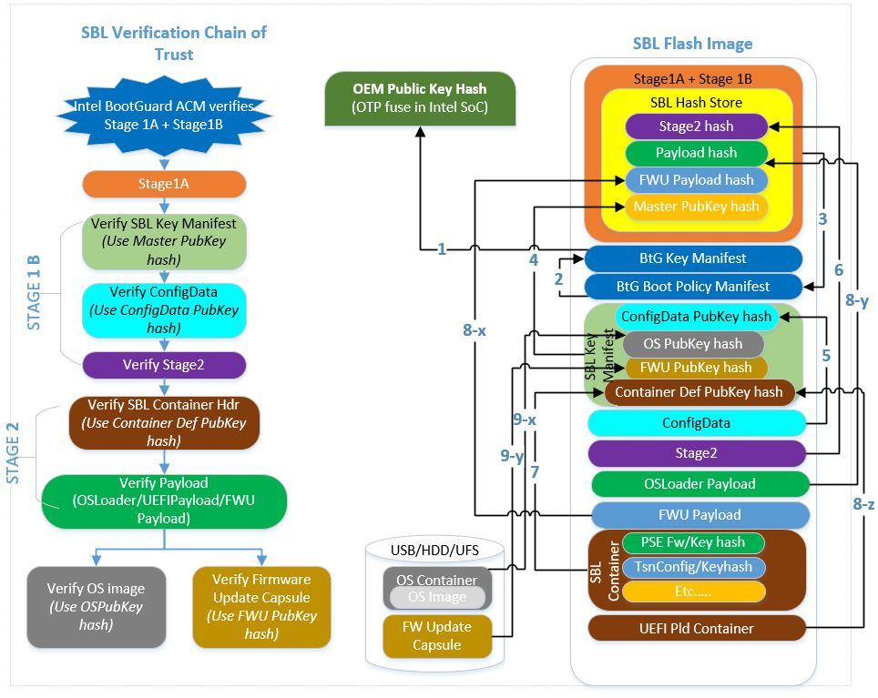

Verified Boot
Slim Bootloader supports verified boot as part of its secure boot feature. Verification uses either of the following two approaches.
1. Hash verification
A hash function is used to create a digest during build and saved as part of the image which is then used to compare against the digest computed during boot to make sure they are the same. The digest calculated during build and saved as part of the image is trusted as its part of the trust chain.
This method is used to verify components for which the digest can be computed during SBL build time.
2. Signature verification
This method of verification is used for independently updateable components like configuration data, IP firmware blobs, OS images, etc.
This method uses asymmetric cryptography, and uses a public-private key pair. Public keys, which may be disseminated widely, and private keys, which are known only to the owner. The private key is used to encrypt the hash digest of an image and the public key is used to verify that the image has not been modified. The public key itself is verified using a hash verification.
SBL Hash Store
SBL maintains a “Hash Store” to save digests needed by the bootloader. This includes the hash digests of SBL stages as well as the hash digests of the public keys used to verify discrete components.
The hash store is included in Stage 1A and is verified as part of IBB by the HWROT. The hash store can be extended using a loadable module as well. Stage 1B verifies this loadable module before extending the built-in hash store.
Verified Boot FLow
The initial Root of Trust (RoT) provides the anchor of trust for the platform and is typically rooted in hardware. The chain of trust is maintained by cryptographically verifying each subsequent component before it is executed. If the verification of a component fails, the boot process will be halted.
Verified boot ensures all executed code comes from a trusted source. SBL supports verified boot.
Below picture depicts how SBL maintains chain-of-trust as platform boots across various stages:
Note
Secure Chain-of-Trust for ApolloLake platform differs slightly from the above picture.
To enable verified boot, see Enable Verified Boot.